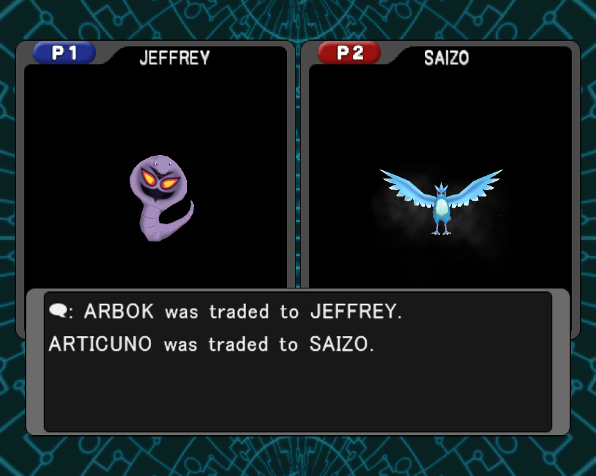
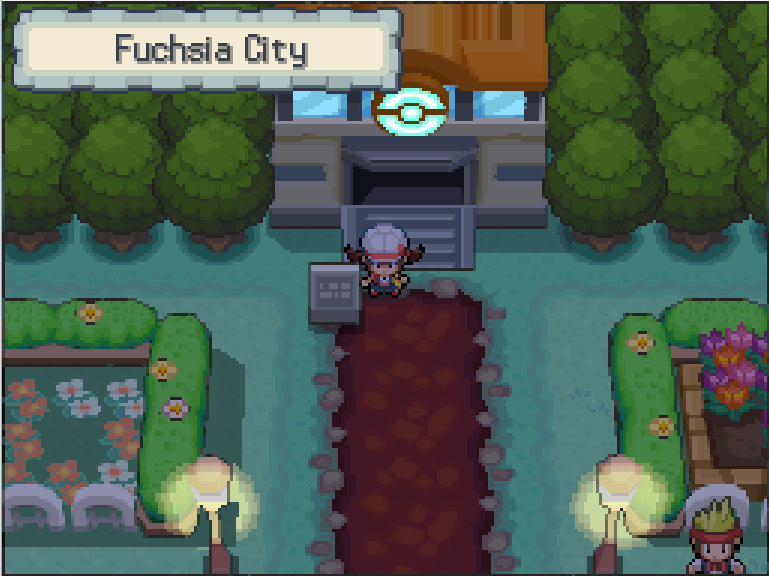
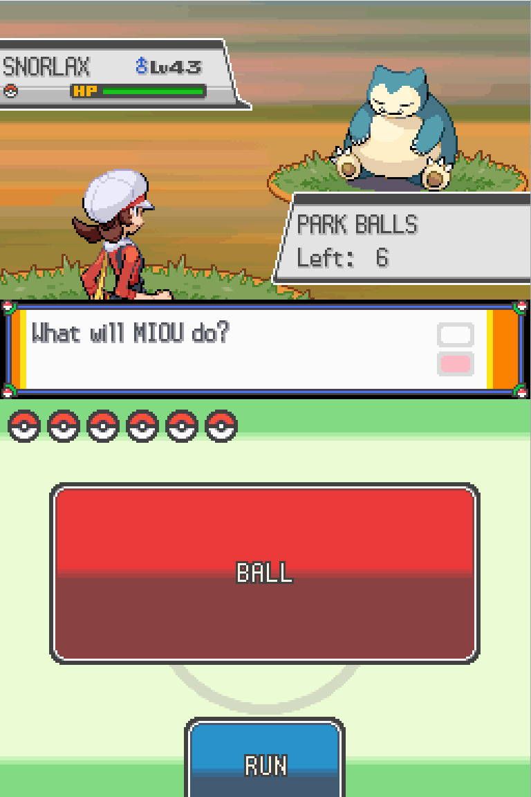

Pokejourney: How to send any Pokemon from a Gamecube game to Generation 5 with emulators
How to send any Pokemon from a Gamecube game to Generation 5 with emulators (Windows PC)
What you need:
1. Colosseum to Gen3 trade
- Latest Dolphin development build with integrated mGBA (version 5.0-14690 or later)
- Pokemon Colosseum or Pokemon XD Gale of Darkness game file
- A post-game save file of the Gamecube game with at least 6 purified pokemon (the campaign must be completed, which means the final boss, Evice in Colosseum or Greevil in XD, must be defeated)
- GBA BIOS file
- Pokemon Gen3 game, preferably Ruby or Sapphire (because Emerald must be postgame to trade with the Gamecube games, FireRed and LeafGreen must be post-game AND have the Sevii Islands subplot completed)
- A save file of the Gen3 game with at least 7 pokemon (6 will be migrated plus another one to stay in player’s party)
2. Gen3 to Gen4 to Gen5 migration
- Latest melonDS (version 0.9.5 or later)
- DS BIOS and firmware files
- Pokemon Gen4 game
- A save file of the Gen4 game with the Pal Park unlocked (post-game)
- Pokemon Gen5 game
- A save file of the Gen5 game with Poke Transfer unlocked (post-game)
Why 6 pokemon? Because in both Pal Park (gen 3 to gen 4) and Poke Transfer (gen 4 to gen 5) you must select exactly 6 pokemon.
Chapter 1: Dolphin-mGBA Setup
- Set a Game Folder and put the Gamecube game in it
- Put the save file in the save folder. Dolphin defaults to %AppData%\Dolphin Emulator
- If you have a CGI file put it in %AppData%\Dolphin Emulator\GC\[REGION]\Card A where REGION is the region of the game (eg. EUR if PAL, USA if NTSC or JAP if NTSC-J).
- If you have a Memory Card raw file, go to Options> Configuration> Gamecube> Device settings and in Slot A select Memory Card. Then, press “...” next to it and select the MemoryCardA.[REGION].raw file.
- Put the Gen3 GBA game file and the GBA BIOS file in %AppData%\Dolphin Emulator\GBA
- Put the Gen3 GBA save file in the %AppData%\Dolphin Emulator\GBA\Save folder. Then you must rename it from [name].sav to [name]-2.sav (for example rename Pokemon Ruby.sav to Pokemon Ruby-2.sav)
- Go to Options> Configuration> Gamecube> GBA Settings and make sure the BIOS file is selected
- Go to Options>Controller Settings>Gamecube controllers and in port 2 select GBA (Integrated)
- Configure both the GC and the GBA input controls making sure they do not overlap
Chapter 2: GC-GBA Trade
In the Gamecube game, travel to Phenac City, go west into the Pokemon Center and then go downstairs. There you can talk to the receptionist to start the trade.
As the message on the upper-right corner suggests, you must save at a Pokemon Center in the GBA game.
Now, in the GBA screen, right-click, select “Load ROM…” and load the GBA game. If done correctly, the trade sequence will begin. If the connection fails, try resetting the GBA game.
The 6 Pokemon I chose to send on a journey are:
The legendary Articuno, Zapdos, Moltres and Lugia, which you get at the end of Gale of Darkness. Also, my starter Eevee which evolved into Jolteon and a Snorlax.



Now, you have a Gameboy Advance save file with the 6 Pokemon from Orre!
To prepare for the GBA-to-DS transfer, you must delete any HM moves from the 6 Pokemon, using the Move Deleter in Fuchsia City (Kanto, house next to Pokémon Center) or Lilycove City (Hoenn, house east of the Department Store).
The last thing to do with mGBA is to deposit the 6 Pokemon in a box and save the game.
Chapter 3: melonDS Setup
melonDS does not store data in Windows Global User Directory like Dolphin does. It is just an executable that, on first boot, creates an ini file to save settings. So you can have the executable, roms, save files etc. in any folder you want. You can also set paths for each file from the Settings.
For simplicity, put everything in the same folder along with melonDS.exe.
- Move the GBA game file from %AppData%\Dolphin Emulator\GBA and the GBA save file from %AppData%\Dolphin Emulator\GBA\Save to the melonDS folder.
- Rename the GBA save file, removing the “-2”, so that the GBA game file and the save have the same name. For example, if you have “Pokemon FireRed.gba” the save file should be “Pokemon FireRed.sav”. This is very important or else melonDS won't be able to read the save file.
- Place every other required file (firmware, BIOS, DS games, DS save files) in the folder
- Launch melonDS.exe and go to Config>Emu Settings>General and uncheck the “Boot game directly” option.
- Go to Config>Emu Settings>DS-mode, check the “Use external BIOS/firmware files” and then select each file by clicking “Browse…”
- Go to Config>Input and Hotkeys and configure the controls.
Chapter 4: Gen3 to Gen4 migration
- Go to File>Insert ROM Cart… and select the GBA rom file. It will then show up in File>GBA Slot.
- Go to File>Open ROM… and select the Gen4 DS game.
- If everything was done correctly, the DS main menu will show up. In the bottom screen, the Gen4 DS game will be displayed and below there should be the “Start GBA Game” option enabled. Select the DS game to start it.
- In the game’s main menu, go down until you find the “Migrate from [GBA game]” and select it
- Select the 6 pokemon you want to migrate to Gen4. After the game saves, you will be back on the main menu.
- Load your save and go to the Pal Park. Pal Park is located at the east end of Route 221 in Sinnoh and in Fuchsia City in place of the Safari Zone in Kanto.

- Talk to the man inside to start a Catching Show where you should catch all six migrated Pokemon around the Pal Park. At the start of the Catching Show, the player is given six Park Balls, a special type of Poké Ball that can only be used during the Catching Show and which never fails.

- Go around the Pal Park in the grassy areas and the water area until one of the Pokemon shows up and catch it.

- Do the same thing until you find and catch all 6 Pokemon.
Congratulations, the 6 Pokemon have made it to Gen4! Fun fact, because their game of origin isn't mainline, in Summary it shows that the Pokemon originates from a “Distant Land”.
Chapter 4: Gen4 to Gen5 migration
Since melonDS version 0.9.5, there is a local multiplayer option.
- Select System > Multiplayer > Launch new instance and to create a second instance. You can change most settings in the 2nd instance, I recommend changing the inputs so that they are different from instance 1.

- In instance 2, open the Gen5 game and travel to the Poké Transfer Lab in Unova Route 15.
- Talk to the man inside to launch the Poke transfer
- Once you are at the above screen, the Gen5 game is ready to connect with Gen4. Go to instance 1 and open the Gen4 game (reset if you are already in-game). In the DS menu instead of selecting the game, select “DS Download Play”
- Select the “Poke Transfer” option that shows up. Wait for the downloading process to complete.
- Select the 6 Pokemon. Now a
stupid minigame will start, where you must catch the pokemon with a pokeball shooting bow, before the time runs out. If not all six Pokémon are captured within the time limit, the Pokémon not captured will be sent back to the Gen4 game, while those that are caught will be sent to the Gen5 game.

- After the minigame is completed, the Gen4 game will stop and in the Gen5 game you will be back in the Poké Transfer Lab.
And the journey is finished! The 6 Pokemon are in the box!
Fun fact: The purified Pokemon have a “National Ribbon”
Important note: melonDS creates new save copies when multiple instances are used. So the save file that the 6 Pokemon are in, will be named [game].sav.2. For example, Pokemon White 2.sav.2. So if you want to use this save file with melonDS first instance (or another emulator), you must remove the “.2” at the end.
Bonus Chapter: Pokemon Dream Radar to Gen5 migration
Pokemon Dream Radar is a 3DS eshop game where you can send captured Pokemon to a Black 2 or White 2 NDS cartridge inserted in the 3DS. The “3DS app to DS cartridge” communication is not properly emulated in Citra, mainly because only Pokemon Dream Radar and Poke Transporter apps use it.
However, a modder named zaksabeast created a patch that emulates that transfer. Here’s a blog post about it.
Possible Future:
- Gen4 to Pokemon Battle Revolution & My Pokemon Ranch
- Dolphin-melonDS connectivity?
- Poke Transporter - Pokemon Bank / connects Gen1&2 Virtual Console, Gen5, Gen6, Gen7
- Citra Online with an official Nintendo Network account?
- Pretendo?
- Bank Offline patch?
- Mikage/Panda3DS?
- Pokemon Home / connects Pokemon Bank, Gen8 and Gen9
- Yuzu online? (very unlikely, already tried it and was shut immediately)
- Ryujinx?
- Nintendo Switch Online replacement (like Wiimmfi and Pretendo) in the future
- Home Offline patch?
Special Thanks to:
Every Dolphin contributor over the years
shuffle2 and skidau for the original Dolphin to VGA-M Emulation
endrift for creating mGBA and fixing GameCube and Game Boy Advance Communication
bonta0 for Dolphin-mGBA Integration
Arisotura for creating melonDS and implementing NDS local multiplayer
rzumer for adding GBA cartridge communication to melonDS
Every Citra contributor over the years
zaksabeast for the Dream Radar Cart Redirect patch